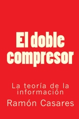

El doble compresor,
escrito por
Ramón Casares,
ha quedado liberado conforme a los términos de la licencia
Creative Commons
Reconocimiento-Compartir bajo la misma licencia 3.0 España License.
|  |
Título: El doble compresor Subtítulo: La teoría de la información Autor: Ramón Casares (2010) Edición: 1ª (20100616) Licencia: cc-by-sa 3.0 ISBN-10: 1-4536-0915-6; ISBN-13: 978-1-4536-0915-6 |
Pulsa aquí para volver a la página principal
"El mundo no es una máquina enorme, como creen los materialistas, sino un enigma inmenso" (§160 ¶6).
En el libro le muestro las limitaciones del materialismo, y le presento una teoría para superarlo. Como vía de ataque utilizo el concepto de información, que investigo con usted inspeccionando juntos las grietas de la percepción. Mi evaluación subjetivista es concluyente: la realidad no es lo que está fuera, sino el producto de la percepción.
Pero, resulta que el poder expresivo de los procesos perceptivos es limitado. La prueba es que podemos hablar de cosas que no podemos observar. Por esto, la realidad no lo es todo, sino la representación de lo exterior que construye la percepción con sus exiguos recursos expresivos. Y el materialismo, al ceñirse a lo observable, a lo medible, es innecesariamente pobre. Urge superar esta situación.
Visto que el habla es más expresiva que la percepción, me fijo en que no podemos percibir los problemas. Entonces demuestro que, para poder representar todos los conceptos de la teoría del problema, es necesaria una sintaxis recursiva. Esto es muy técnico, pero, basta saber que la sintaxis del habla es una sintaxis recursiva, para entender por qué sólo los sujetos parlantes podemos examinar mentalmente las posibles resoluciones de un problema. También le explico la consciencia, pero, para alcanzar los detalles, ha de leer el interior de este libro.
"El doble compresor" está archivado en el Internet Archive.
El doble compresor,
escrito por
Ramón Casares,
ha quedado liberado conforme a los términos de la licencia
Creative Commons
Reconocimiento-Compartir bajo la misma licencia 3.0 España License.
Última actualización: 2013.06.24.
© Ramón Casares 2010-2013